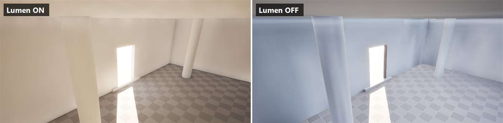
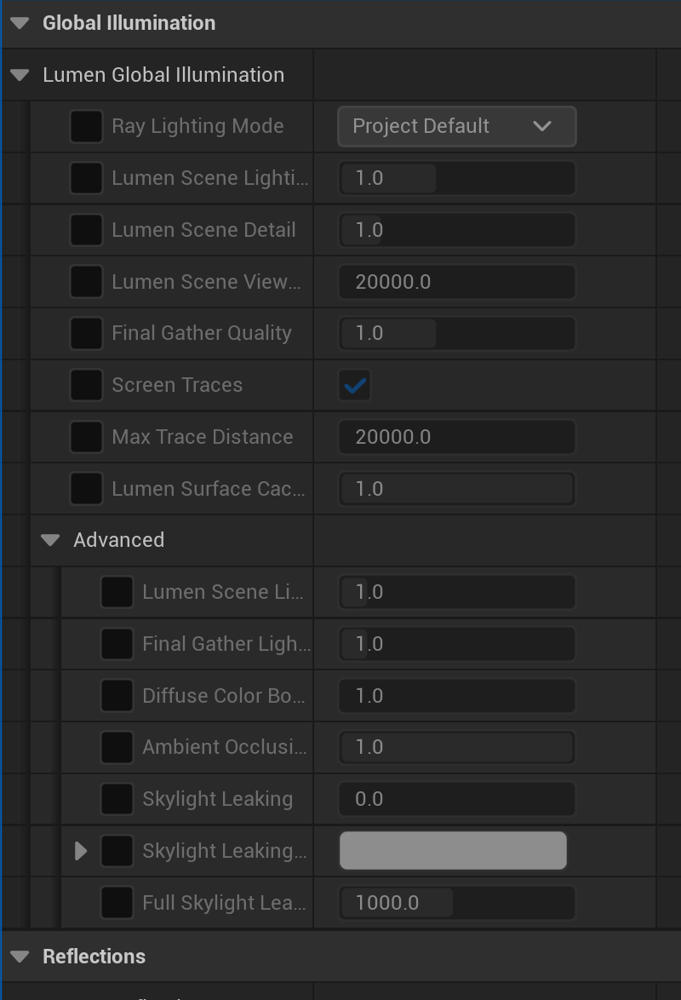
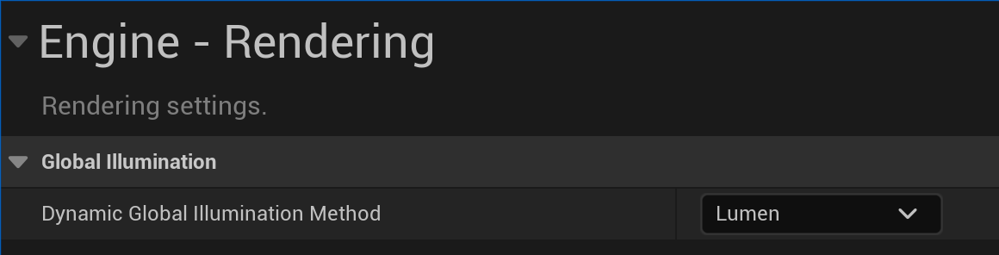

✨ Lumen Global Illumination
Lumen is Unreal Engine 5's revolutionary real-time global illumination and reflections system. It eliminates the need for baking lightmaps, allowing fully dynamic lighting that responds instantly to changes in your scene. Move a wall, change a light color, open a door—Lumen updates everything in real time. In this lesson, you'll learn how Lumen works, when to use it, and how to configure it for the best balance of quality and performance.
🎯 Learning Objectives
By the end of this lesson, you will be able to:
- Explain how Lumen calculates global illumination and reflections
- Compare Lumen with traditional baked lighting approaches
- Choose between Software and Hardware Ray Tracing modes
- Configure Lumen settings for different quality/performance targets
- Identify when Lumen is appropriate vs. alternative solutions
- Set up and optimize a Lumen-lit scene from scratch
- Understand MegaLights (Experimental in UE 5.8) for affordable many-light shadows
Estimated Time: 55-65 minutes
Prerequisites: Lesson 4.1-4.3 (Lighting Fundamentals, Outdoor and Interior Lighting)
In This Lesson
What is Lumen?
Lumen is Unreal Engine 5's default global illumination and reflections system. It provides fully dynamic indirect lighting without the need to bake lightmaps—a revolutionary departure from traditional real-time rendering workflows.
The Problem Lumen Solves
Before Lumen, real-time global illumination was one of the hardest problems in game development. When light bounces off surfaces (indirect lighting), it creates subtle color bleeding, soft ambient shadows, and the natural way light fills a room. Calculating this in real time was too expensive, so developers had two main options:
Baked Lightmaps: Pre-calculate light bounces and store them in textures. Great quality, but completely static—nothing can move without breaking the lighting.
Screen Space Effects: Approximate indirect lighting using only what's visible on screen. Fast, but limited and prone to artifacts when objects move off-screen.
Lumen changes this equation entirely. It calculates global illumination in real time, allowing lights, geometry, and materials to change dynamically while maintaining convincing indirect lighting.
Figure: Lumen enables fully dynamic indirect lighting—move objects, change lights, and see results instantly.
What Lumen Provides
Lumen actually consists of two systems that work together:
Lumen Global Illumination: Calculates indirect lighting—light that bounces off surfaces to illuminate other surfaces. This creates color bleeding (a red wall tints nearby objects red), soft ambient shadows, and the natural way light fills spaces.
Lumen Reflections: Provides dynamic reflections for shiny and metallic surfaces. Unlike screen-space reflections, Lumen reflections include off-screen objects and work at any angle.
Both systems update in real time as your scene changes. Toggle a light on, and within milliseconds the bounced light and reflections update throughout the entire scene.
💡 Default in UE5
Lumen is enabled by default in new Unreal Engine 5 projects. If you create a project from the Blank or Third Person template, you're already using Lumen. This is a significant shift from UE4, where baked lighting was the default workflow.

Figure: The same interior, lit largely by sunlight bounced in through the doorway, with Lumen Global Illumination on (left) and off (right). With Lumen on, indirect light fills the room with warm color bleed and soft contact shadows in the corners. With it off, only direct sun and a flat ambient remain · the corners lose their occlusion and the room looks flat and cold. Both frames use the identical camera.
How Lumen Works
Understanding Lumen's underlying technology helps you work with it effectively and troubleshoot issues. While the full technical details are complex, the core concepts are accessible.
Surface Cache
Lumen's foundation is the Surface Cache—a simplified representation of your scene's surfaces stored in memory. For each mesh in your level, Lumen captures cards (rectangular patches) that store the surface's material properties: color, roughness, metallic value, and emissive.
When light hits a surface, Lumen looks up its properties in the Surface Cache rather than re-evaluating complex material shaders. This cache is what makes real-time GI possible—it trades some material fidelity for massive performance gains.
Figure: Lumen captures mesh surfaces as simplified cards, enabling fast indirect lighting calculations.
Ray Tracing (The Two Kinds)
Lumen traces rays through your scene to determine how light bounces. There are two ray tracing methods:
Software Ray Tracing: Uses signed distance fields (SDFs) to trace rays on the GPU without specialized hardware. Works on any modern graphics card. Faster for scenes with many meshes but has some quality limitations.
Hardware Ray Tracing: Uses the dedicated RT cores on NVIDIA RTX or AMD RDNA2+ GPUs. Higher quality results, especially for detailed geometry, but requires compatible hardware and has higher performance cost.
Both methods can be used together—Lumen intelligently combines them for optimal results. We'll explore this choice in detail later in the lesson.
Radiance Cache
Lumen doesn't trace rays for every pixel every frame—that would be impossibly expensive. Instead, it uses a Radiance Cache: a 3D grid of probes throughout your scene that store incoming light from all directions.
Each probe samples the lighting at its location. Nearby pixels interpolate between probes to determine their indirect lighting. The engine continuously updates probes as lighting changes, spreading updates across multiple frames to maintain performance.
Figure: Lumen's Radiance Cache stores indirect lighting at probe locations; pixels interpolate between them.
Screen Traces and Final Gather
For the final image, Lumen performs screen traces—rays shot from each visible pixel into the scene. These rays hit surfaces and look up the accumulated radiance from the cache system. This final gather step produces the smooth, high-quality indirect lighting you see on screen.
The multi-level approach (Surface Cache → Radiance Cache → Screen Traces) is what makes Lumen efficient. Each level reduces the work needed at the next, enabling real-time performance that would otherwise require offline rendering.
✅ Key Insight
Lumen is fundamentally a temporal system—it spreads work across multiple frames. When lighting changes, you may notice a brief adjustment period as the caches update. This is normal and expected. In motion, the eye doesn't notice these subtle temporal transitions.
Lumen vs. Baked Lighting
Before diving into Lumen's settings, it's essential to understand when Lumen is the right choice versus traditional baked (precomputed) lighting. Both approaches have their place in modern game development.
Baked Lighting Overview
Baked lighting pre-calculates indirect illumination and stores it in lightmap textures. The engine traces millions of light paths during a build process that can take minutes to hours, producing high-quality results that render extremely fast at runtime.
Pros of Baked Lighting:
- Maximum quality—unlimited light bounces, no temporal artifacts
- Minimal runtime cost—just texture lookups
- Works on any hardware, including low-end mobile
- Consistent quality regardless of scene complexity
Cons of Baked Lighting:
- Static only—nothing lit by baked light can move
- Long iteration times (rebuild after every change)
- Memory cost for lightmap textures (can be gigabytes)
- UV layout requirements (lightmap UVs needed)
Lumen Advantages
Lumen's dynamic nature provides significant workflow and capability benefits:
Instant Iteration: Change a light color, move a wall, adjust a material—see results immediately. No waiting for builds. This accelerates the creative process enormously.
Fully Dynamic Scenes: Doors can open and close, lights can turn on and off, objects can be destroyed—and the lighting responds naturally. This enables gameplay interactions that are impossible with baked lighting.
No Lightmap UVs Required: Meshes don't need special UV channels for lightmaps, simplifying the asset pipeline.
Consistent Look: Dynamic and static objects receive the same GI treatment, avoiding the mismatched look that can occur when mixing baked static lighting with dynamic objects.
flowchart LR
subgraph Baked["Baked Lighting"]
B1["✅ Maximum quality"]
B2["✅ Minimal runtime cost"]
B3["✅ Any hardware"]
B4["❌ Static only"]
B5["❌ Long build times"]
B6["❌ High memory"]
end
subgraph Lumen["Lumen GI"]
L1["✅ Fully dynamic"]
L2["✅ Instant iteration"]
L3["✅ No lightmap UVs"]
L4["⚠️ Requires modern GPU"]
L5["⚠️ Temporal settling"]
L6["⚠️ Runtime cost"]
end
style Baked fill:#e3f2fd,stroke:#1976D2
style Lumen fill:#e8f5e9,stroke:#4CAF50
Figure: Baked lighting and Lumen each have distinct advantages—choose based on your project's needs.
When to Choose Each
Choose Lumen when:
- Your scene has dynamic elements (moving lights, destructible environments)
- You're targeting PC, current-gen consoles, or high-end hardware
- Rapid iteration during development is valuable
- You want consistent GI across dynamic and static objects
Choose Baked Lighting when:
- Targeting mobile or low-end hardware
- Your environment is completely static
- You need absolute maximum quality for cinematics
- Runtime performance budget is extremely tight
Hybrid Approaches: You can also combine both—use baked lighting for static elements and dynamic lights for interactive elements. Unreal supports mixing Stationary lights (baked indirect, dynamic direct) with Lumen for specific use cases.
⚠️ Project Setting: Global Illumination Method
In Project Settings → Rendering → Global Illumination, you choose your GI method: Lumen, Screen Space, or None (for baked-only). This is a project-wide setting that fundamentally changes how lighting works. Switching mid-project is possible but may require lighting adjustments.
Software vs. Hardware Ray Tracing
Lumen can trace rays using two different methods. Understanding the differences helps you choose the right mode for your project and hardware.
Software Ray Tracing (Default)
Software ray tracing uses Signed Distance Fields (SDFs)—mathematical representations of mesh surfaces stored as 3D textures. Rays march through these distance fields to find intersections, all running on standard GPU compute shaders.
How SDFs Work: Each point in a distance field stores the distance to the nearest surface. A ray can "step" through the field by the stored distance each iteration—if the distance is 10 units, the ray knows it's safe to move 10 units without hitting anything. This makes tracing very efficient.
Figure: SDF ray marching steps through the scene using distance values, efficiently finding surfaces.
Software RT Pros:
- Works on any DirectX 11+ GPU (no RT cores needed)
- Fast for scenes with moderate mesh counts
- Lower memory overhead than hardware RT
Software RT Cons:
- Limited geometric detail (SDFs are approximations)
- Thin or highly detailed objects may not represent well
- Each mesh needs a generated distance field (build time)
Hardware Ray Tracing
Hardware ray tracing uses the dedicated RT cores in modern GPUs (NVIDIA RTX 20/30/40 series, AMD RDNA2+). These specialized units accelerate ray-triangle intersection tests, enabling rays to trace against actual mesh triangles rather than SDF approximations.
Hardware RT Pros:
- Higher geometric accuracy (traces actual triangles)
- Better results for detailed/thin geometry
- Can capture small surface details SDFs miss
Hardware RT Cons:
- Requires compatible GPU hardware
- Higher performance cost per ray
- Needs ray tracing structures built for meshes
Choosing Your Mode
Figure: Choose Software RT for compatibility or Hardware RT for maximum quality on supported hardware.
In practice, Lumen can combine both modes. You can use Software RT for distant objects and scene-wide GI while enabling Hardware RT for nearby detailed surfaces. This hybrid approach balances quality and performance.
Enabling Hardware Ray Tracing
To use Hardware RT with Lumen:
- Go to Project Settings → Platforms → Windows → Targeted RHIs
- Ensure DirectX 12 is the default RHI (required for hardware RT)
- Go to Project Settings → Rendering → Hardware Ray Tracing
- Enable Support Hardware Ray Tracing
- In Lumen settings, set Ray Lighting Mode to "Hit Lighting for Reflections" or "Surface Cache + Hit Lighting"
- Restart the editor for changes to take effect
✅ Recommendation
Start with Software Ray Tracing (the default). It works well for most projects and keeps your game accessible to more players. Only enable Hardware RT if you specifically need its quality benefits and are targeting high-end hardware. You can always add it later as a scalability option.
Lumen Settings and Optimization
Lumen provides numerous settings to balance quality and performance for your specific needs. Understanding these settings helps you achieve the best results for your target hardware.
Accessing Lumen Settings
Lumen settings are found in several locations:
Project Settings: Edit → Project Settings → Engine → Rendering. These are project-wide defaults.
Post Process Volume: Place a Post Process Volume in your level and check "Infinite Extent" to affect the entire level. The Lumen section in its Details panel overrides project defaults.
Console Variables: For testing, use console commands (` key) to adjust settings in real time. Prefix with "r.Lumen."
Key Global Illumination Settings
These settings control Lumen's indirect lighting quality:
Lumen Scene Detail: Controls how detailed the Surface Cache representation is. Higher values capture finer geometric detail but cost more memory and performance. Range: 0.25 (low) to 4.0 (ultra). Default: 1.0.
Lumen Scene Lighting Update Speed: How quickly indirect lighting responds to changes. Higher values = faster updates but more temporal noise. Lower values = smoother but slower to react. Range: 0.5 to 2.0. Default: 1.0.
Final Gather Quality: Quality of the screen-space final gather pass. Higher values reduce noise but cost more. Range: 0.25 to 4.0. Default: 1.0.
Max Trace Distance: How far rays travel to find bounced light. Larger values handle bigger spaces but cost more. Measured in Unreal units (centimeters). Default: 20000 (200 meters).
Figure: Higher quality settings provide better visuals but require more powerful hardware.
Key Reflection Settings
Lumen Reflections have their own quality controls:
Reflection Quality: Overall quality of traced reflections. Affects ray count and resolution. Range: 0.25 to 4.0. Default: 1.0.
Ray Lighting Mode: Determines how reflections are lit:
- Surface Cache: Uses the simplified surface cache (faster, default for Software RT)
- Hit Lighting for Reflections: Evaluates full material shading for reflection rays (higher quality, requires Hardware RT)
Max Reflection Bounces: How many times reflections can bounce between surfaces. More bounces = more realistic mirror corridors but higher cost. Default: 1.
Post Process Volume Overrides
Using a Post Process Volume, you can fine-tune Lumen for specific areas or globally override project settings:

Figure: The Lumen Global Illumination settings on a Post Process Volume, with its Details panel filtered to "Lumen". Check the box beside a setting to override the project default for this volume.
Optimization Strategies
When Lumen performance isn't meeting your targets, try these approaches in order:
1. Reduce Final Gather Quality First: This has the biggest performance impact. Try 0.5 for significant savings with minimal visual difference in motion.
2. Lower Scene Detail: Reduce to 0.5 if your scene doesn't have many small objects that need accurate GI representation.
3. Limit Max Trace Distance: For interior scenes, you may not need rays traveling 200 meters. Try 5000-10000 for rooms.
4. Use Screen Space Global Illumination (SSGI) for Fallback: In scalability settings, lower quality tiers can fall back to cheaper SSGI instead of Lumen.
5. Reduce Reflection Quality: Reflections are expensive. For non-critical surfaces, 0.5 quality is often sufficient.
✅ Scalability Settings
Unreal's Scalability system (Engine → Scalability in Project Settings) lets you define quality presets (Low, Medium, High, Epic, Cinematic). Configure Lumen settings for each tier so players can adjust based on their hardware. The engine automatically applies the appropriate preset.
Debugging Lumen
Unreal provides visualization modes to understand what Lumen is doing:
View Mode → Lumen → Lumen Scene: Shows the Surface Cache representation. Objects should appear with correct colors. Missing or black areas indicate Surface Cache problems.
View Mode → Lumen → Lumen Reflections: Isolates reflection contribution. Useful for diagnosing reflection quality issues.
Console: r.Lumen.Visualize.Mode: Various debug visualizations including radiance cache probes, ray directions, and more.
flowchart TD
A["Performance Issues?"] --> B{"Check GPU Usage"}
B -->|"Lumen GI High"| C["Reduce Final Gather Quality
Try 0.5"]
B -->|"Lumen Reflections High"| D["Reduce Reflection Quality
Try 0.5"]
B -->|"Surface Cache High"| E["Reduce Scene Detail
Try 0.5"]
C --> F{"Still Slow?"}
D --> F
E --> F
F -->|"Yes"| G["Lower Max Trace Distance"]
F -->|"No"| H["✅ Performance Target Met"]
G --> I{"Still Slow?"}
I -->|"Yes"| J["Consider SSGI Fallback
or Baked Lighting"]
I -->|"No"| H
style H fill:#4CAF50,color:#fff
style J fill:#FF9800,color:#fff
Figure: Systematic approach to optimizing Lumen performance.
Common Lumen Issues and Solutions
⚠️ Troubleshooting Guide
Issue: Black or missing indirect lighting on objects
Solution: Check that the mesh has "Generate Mesh Distance Field" enabled in its Static Mesh settings. Rebuild distance fields if needed.
Issue: Light leaking through thin walls
Solution: Increase wall thickness (minimum 10-20 cm recommended). Enable two-sided distance field generation for thin geometry. Consider using Hardware RT for better accuracy.
Issue: Flickering or unstable indirect lighting
Solution: Increase "Lumen Scene Lighting Update Speed" for faster settling. Ensure lights aren't moving erratically. Check for overlapping geometry causing conflicts.
Issue: Reflections show incorrect or outdated content
Solution: Reflections use the Surface Cache, which updates over time. Fast-moving objects may show stale reflections briefly—this is expected behavior. Increase reflection quality for faster updates.
Issue: Performance tanked after adding many small objects
Solution: Small objects contribute to Surface Cache cost. Consider merging small static meshes, reducing Scene Detail, or excluding decorative objects from Lumen (set "Affect Distance Field Lighting" to false).
When to Use Lumen
Lumen is powerful but not universally appropriate. Understanding when to use it—and when alternatives make more sense—helps you make informed decisions for your projects.
Ideal Use Cases for Lumen
Dynamic Environments: Games where lighting changes during gameplay—time of day cycles, destructible environments, doors opening/closing, lights turning on/off. Lumen handles all of these seamlessly.
Rapid Iteration: During development, Lumen's instant feedback accelerates the creative process. Even if you plan to ship with baked lighting, developing with Lumen can be faster.
Consistent Quality: Lumen treats static and dynamic objects identically. There's no visual mismatch between baked static meshes and dynamically-lit characters or movable props.
Open Worlds: Streaming large worlds with Lumen is simpler than managing pre-computed lighting data across level boundaries.
Next-Gen Consoles and PC: PlayStation 5, Xbox Series X|S, and modern gaming PCs have the GPU power to run Lumen at good quality levels.
Figure: Lumen is ideal for dynamic, interactive, and rapidly-iterated projects on capable hardware.
When to Consider Alternatives
Lumen isn't the right choice for every project:
Mobile Games: Current mobile GPUs can't run Lumen effectively. Use baked lighting or simpler dynamic solutions for mobile targets.
Low-End PC / Previous-Gen Consoles: PS4, Xbox One, and integrated graphics struggle with Lumen. Consider baked lighting with limited dynamic lights.
Completely Static Environments: If nothing in your level ever moves or changes, baked lighting provides maximum quality at minimal runtime cost.
Stylized/Non-Photorealistic Art: Lumen is designed for physically-based rendering. Highly stylized games may not benefit from realistic GI and might prefer simpler, art-directed lighting.
VR (Virtual Reality): VR requires very high, stable framerates (90fps+). Lumen's performance cost and temporal artifacts can be problematic. Many VR games use baked or simpler dynamic lighting.
flowchart TD
A["Choosing GI Method"] --> B{"Target Platform?"}
B -->|"Mobile"| C["❌ Not Lumen
Use Baked Lighting"]
B -->|"PS4/Xbox One"| D["❌ Not Lumen
Use Baked + Limited Dynamic"]
B -->|"PS5/XSX/PC"| E{"Dynamic Lighting
Needed?"}
E -->|"Yes, frequently"| F["✅ Use Lumen"]
E -->|"No, static scene"| G{"Iteration Speed
Important?"}
G -->|"Yes"| H["✅ Develop with Lumen
Consider baking for ship"]
G -->|"No"| I["Consider Baked
for max quality"]
F --> J{"Performance OK?"}
J -->|"Yes"| K["✅ Ship with Lumen"]
J -->|"No"| L["Optimize settings or
hybrid approach"]
style C fill:#f44336,color:#fff
style D fill:#f44336,color:#fff
style F fill:#4CAF50,color:#fff
style K fill:#4CAF50,color:#fff
Figure: Decision tree for choosing between Lumen and alternative GI solutions.
Hybrid Approaches
You're not limited to purely Lumen or purely baked lighting. Several hybrid strategies can optimize for specific needs:
Lumen + Baked Skylighting: Use Lumen for local lights but bake skylighting for distant outdoor ambient. Reduces Lumen's workload while maintaining dynamic local lighting.
Scalability Fallback: Ship with Lumen for high-end settings but fall back to SSGI or even baked lighting for low settings. This maximizes audience reach.
Develop with Lumen, Ship with Baked: Use Lumen during development for fast iteration. When content is final, bake lighting for maximum quality and performance on target platforms.
Lumen for Interiors, Simplified Outdoors: Use full Lumen indoors where bounce lighting matters most. Outdoors, rely more on direct lighting and atmospheric effects with reduced Lumen contribution.
💡 The Fortnite Approach
Epic's Fortnite uses Lumen on current-gen consoles and PC while providing fallback rendering for older hardware and mobile. This demonstrates that hybrid approaches work at scale—you can have cutting-edge visuals for capable hardware without abandoning your broader audience.
Performance Expectations
To set realistic expectations, here are rough performance guidelines:
High-End PC (RTX 3080+): Lumen at Epic/Cinematic quality, 4K, 60fps achievable in most scenes.
Mid-Range PC (RTX 3060): Lumen at High quality, 1440p, 60fps typical. May need Medium settings for complex scenes.
Current-Gen Consoles (PS5/XSX): Lumen at High quality, 1080-1440p, 30-60fps depending on other scene complexity.
Steam Deck / Entry GPUs: Lumen at Low/Medium, 720-900p, 30fps. Consider SSGI fallback for better performance.
⚠️ Profile, Don't Guess
These are rough guidelines. Actual performance depends heavily on scene complexity, material shaders, number of lights, and many other factors. Always profile your specific content using Unreal's profiling tools (Stat GPU, Unreal Insights) to identify real bottlenecks.
MegaLights (Experimental in UE 5.8)
⚠️ Experimental Feature
MegaLights is marked Experimental in UE 5.8. It is promising enough to appear in Epic's showcase demos, but its settings, quality, and API can still change between releases. Enable it to explore and prototype, but validate carefully before relying on it for a shipping project.
Where Lumen solves indirect lighting and reflections, MegaLights tackles a different long-standing problem: the cost of many direct, shadow-casting lights. Introduced in UE 5.5 and still evolving through 5.8, MegaLights makes it practical to light a scene with hundreds of dynamic, shadow-casting lights at a roughly fixed cost.
The Problem: Shadowed Lights Are Expensive
Traditionally, every dynamic light that casts shadows adds a shadow-rendering pass. A handful of shadowed lights is fine, but the cost grows with each one added. Artists learned to ration shadow-casting lights: most lights in a scene were set to not cast shadows, or their shadows were faked, to keep the frame rate playable. Rich, believable lighting with dozens of real shadowed lights was simply too expensive in real time.
How MegaLights Works
MegaLights changes the economics with stochastic sampling. Instead of fully evaluating every light for every pixel, it samples a small, random subset of the most relevant lights per pixel each frame, traces ray-traced shadows for just those samples, and then reconstructs the full result with a temporal and spatial denoiser. Because each pixel only ever pays for a few samples, the cost becomes largely independent of how many lights are in the scene.
The practical result: you can place many soft, area-shadowed lights · point, spot, and rect lights all casting ray-traced shadows · and the frame cost stays roughly flat as the light count climbs.
Figure: MegaLights samples a small subset of lights per pixel, traces ray-traced shadows for those samples, then denoises to reconstruct the full many-light result at roughly fixed cost. Experimental in UE 5.8.
MegaLights and Lumen Work Together
MegaLights and Lumen are complementary, not competing. Lumen handles the indirect bounce lighting and reflections covered earlier in this lesson; MegaLights handles the direct lighting and shadows from your many light sources. In a typical UE 5.8 project you enable both: Lumen for global illumination, MegaLights for affordable many-light direct shadows.
Requirements
- A GPU and project configured for Hardware Ray Tracing (MegaLights relies on ray-traced shadows)
- DirectX 12 with Shader Model 6
- Works best alongside Lumen with Hardware Ray Tracing enabled
Enabling MegaLights
- Ensure Hardware Ray Tracing is enabled (see the Software vs. Hardware Ray Tracing section above)
- Open Project Settings → Engine → Rendering and search for MegaLights
- Enable the MegaLights option project-wide, or toggle it per area using a Post Process Volume
- Restart the editor if prompted
- Place several shadow-casting lights and observe that the frame cost stays stable as you add more
When to Use MegaLights
- Interiors and archviz with many practical fixtures (lamps, ceiling lights, signage)
- Night cityscapes and sci-fi corridors dense with local light sources
- Any scene where you previously had to disable shadows on most lights for performance
⚠️ Because It Is Experimental
Low-sample regions can show temporal noise or ghosting during fast motion until the denoiser settles · very small or thin light sources may sample less reliably · and behavior and settings may shift in future releases. Profile with stat gpu and compare against traditional shadowed lights before committing to MegaLights in a shipping project.
Hands-On: Enable and Configure Lumen
Let's put everything together by setting up and configuring Lumen in a practical scenario. We'll start with a fresh project, verify Lumen is active, configure settings for quality, and test dynamic lighting behavior.
🎯 Exercise Goal
Configure a scene with Lumen GI and Reflections, verify dynamic lighting works correctly, optimize settings for your hardware, and understand how to diagnose common issues.
Step 1: Verify Lumen is Enabled
New UE5 projects have Lumen enabled by default, but let's confirm:
- Open your project (or create a new Third Person template project)
- Go to Edit → Project Settings
- Navigate to Engine → Rendering → Global Illumination
- Verify Dynamic Global Illumination Method is set to Lumen
- Under Reflections, verify Reflection Method is set to Lumen

Figure: In Project Settings · Engine · Rendering, the Dynamic Global Illumination Method is set to Lumen. Set the Reflection Method to Lumen the same way, in the Reflections section just below.
Step 2: Create a Test Environment
Build a simple scene to observe Lumen's behavior:
- Create a new level (File → New Level → Empty Level)
- Add a floor: Place Actors → Basic → Cube, scale to (20, 20, 0.1)
- Add walls: Create three more cubes as walls around the floor, leaving one side open
- Add a ceiling: Another cube scaled flat above the walls
- Add a Directional Light representing the sun
- Add a Sky Atmosphere and SkyLight for ambient
- Place a few simple objects inside the room (cubes, spheres)
You should now have a basic room with one open wall where sunlight can enter.
Step 3: Observe Lumen Global Illumination
With Lumen active, you should immediately see indirect lighting effects:
- Look at the interior walls—they should be softly lit by bounced sunlight, not completely black
- Place a brightly colored cube (apply a red or blue material) near a white wall
- Observe color bleeding—the wall should pick up a subtle tint from the colored cube
- Move the colored cube and watch the color bleeding update in real time
✅ Checkpoint
If you see soft indirect lighting on interior surfaces and color bleeding from colored objects, Lumen GI is working correctly. If surfaces appear completely black in shadow, check that Lumen is enabled and that your SkyLight is configured properly.
Step 4: Test Dynamic Lighting
Demonstrate Lumen's dynamic nature:
Test 1 - Moving Light:
- Select the Directional Light
- Rotate it to change the sun angle
- Watch how interior indirect lighting updates immediately
- Note the brief "settling" period as the radiance cache updates
Test 2 - Toggling Lights:
- Add a Point Light inside the room
- Set it to a bright color (orange or blue)
- Toggle the light on/off using the checkbox in Details panel
- Observe how the entire room's indirect lighting changes
Test 3 - Moving Geometry:
- Select one of your walls
- Move it while watching the interior lighting
- Light should flood in or be blocked as the wall moves
- This is impossible with baked lighting!
Step 5: Configure a Post Process Volume
Set up scene-wide Lumen control:
- Place Actors → Volumes → Post Process Volume
- In Details panel, check Infinite Extent (Unbound)
- Expand the Lumen Global Illumination section
- Check the override box next to Lumen Scene Detail
- Try different values (0.5, 1.0, 2.0) and observe quality differences
- Check override for Final Gather Quality and experiment
Step 6: Test Reflections
Create a reflective surface to see Lumen Reflections:
- Create a new Material in Content Browser
- Set Metallic to 1.0
- Set Roughness to 0.0 (perfect mirror)
- Apply to a cube or sphere in your scene
- The reflective surface should show the room, including indirect lighting
- Move objects and watch reflections update in real time
Figure: A mirror material shows Lumen Reflections capturing the scene in real time.
Step 7: Use Debug Visualizations
Explore Lumen's inner workings:
- In the viewport, click View Mode (usually "Lit")
- Navigate to Lumen → Lumen Scene
- This shows the Surface Cache—your scene represented as colored cards
- Check that all surfaces appear with correct colors
- Black or missing areas indicate Surface Cache problems
- Try Lumen → Lumen Reflections to isolate reflection contribution
- Return to Lit mode when done
Step 8: Optimize for Your Hardware
Find the right balance for your system:
- Open the console with the ` (backtick) key
- Type
stat gputo see GPU timing breakdown - Look for "Lumen" entries—these show GI and Reflection costs
- If Lumen is taking too long, reduce quality in Post Process Volume:
For performance issues, try these adjustments in order:
- Final Gather Quality: 1.0 → 0.5
- Lumen Scene Detail: 1.0 → 0.5
- Reflection Quality: 1.0 → 0.5
- Max Trace Distance: 20000 → 10000 (for indoor scenes)
Re-check stat gpu after each change to see the impact.
✅ Exercise Complete!
You've successfully configured Lumen, observed its dynamic behavior, tested reflections, used debug views, and learned to optimize settings. These skills transfer directly to production projects.
Bonus: Hardware Ray Tracing (Optional)
If you have an RTX or RDNA2+ GPU and want to try Hardware RT:
- Go to Project Settings → Platforms → Windows
- Set Default RHI to DirectX 12
- Go to Project Settings → Rendering → Hardware Ray Tracing
- Enable Support Hardware Ray Tracing
- Restart the editor
- In your Post Process Volume, find Lumen Reflections
- Set Ray Lighting Mode to "Hit Lighting for Reflections"
- Observe improved reflection quality (at higher performance cost)
⚠️ Hardware RT Considerations
Hardware RT significantly increases quality but also GPU load. Monitor performance with stat gpu and only use if your hardware can sustain acceptable framerates. Software RT (the default) is a great balance for most projects.
Summary
In this lesson, you've learned about Lumen—Unreal Engine 5's revolutionary real-time global illumination and reflection system. Lumen eliminates the traditional trade-off between dynamic lighting and quality indirect illumination, enabling new possibilities for interactive and iterative development.
Key Concepts
What Lumen Is: A fully dynamic global illumination and reflection system that calculates light bounces in real time. It uses Surface Cache, Radiance Cache, and screen traces to achieve real-time performance.
How Lumen Works: Meshes are captured into a simplified Surface Cache. A Radiance Cache of probes stores accumulated indirect lighting. Screen traces gather final illumination for each pixel. The system updates continuously as your scene changes.
Software vs. Hardware RT: Software Ray Tracing uses Signed Distance Fields and works on any modern GPU. Hardware Ray Tracing uses dedicated RT cores for higher quality but requires compatible hardware (RTX/RDNA2+). Both can be combined.
Lumen vs. Baked: Lumen provides instant iteration and fully dynamic scenes. Baked lighting offers maximum quality and performance for static environments. Choose based on your project's needs and target hardware.
Optimization: Key settings include Final Gather Quality, Scene Detail, and Reflection Quality. Reduce these systematically when performance is insufficient. Use stat gpu and debug views to diagnose issues.
When to Use Lumen: Ideal for dynamic environments, rapid iteration, and current-gen hardware. Consider alternatives for mobile, low-end PCs, VR, or completely static scenes.
Best Practices
- Start with defaults: Lumen's default settings work well for most projects
- Profile early: Use stat gpu to understand performance on target hardware
- Optimize systematically: Reduce Final Gather first, then Scene Detail, then Reflections
- Check Surface Cache: Use Lumen Scene view mode to diagnose missing indirect lighting
- Consider scalability: Set up different quality presets for different hardware tiers
- Embrace the temporal nature: Brief settling after changes is normal and expected
Figure: Lumen's multi-stage pipeline enables real-time global illumination.
What's Next?
With Lumen providing beautiful indirect lighting, the next lesson explores Post-Process Effects—the final polish that transforms good-looking scenes into cinematic experiences. You'll learn about exposure control, color grading, bloom, ambient occlusion, and other effects that work alongside Lumen to create stunning visuals.
Knowledge Check
Question 1
What is the primary advantage of Lumen over traditional baked lighting?
Correct answer: B — Lumen's key advantage is fully dynamic indirect lighting. Move objects, change lights, open doors—Lumen updates everything in real time. Baked lighting cannot respond to runtime changes.
Question 2
What does Lumen's Surface Cache store?
Correct answer: B — The Surface Cache captures simplified "cards" representing mesh surfaces, storing their material properties (color, roughness, etc.). This enables fast indirect lighting calculations without re-evaluating complex shaders.
Question 3
What is the difference between Software and Hardware Ray Tracing in Lumen?
Correct answer: C — Software RT uses Signed Distance Fields to trace rays on standard GPU compute shaders. Hardware RT uses dedicated RT cores (on RTX/RDNA2+ GPUs) to trace against actual mesh triangles for higher geometric accuracy.
Question 4
Which Lumen setting should you reduce FIRST when experiencing performance issues?
Correct answer: C — Final Gather Quality has the biggest performance impact. Reducing it from 1.0 to 0.5 provides significant savings with minimal visual difference in motion. It should be the first adjustment when optimizing.
Question 5
For which scenario is Lumen NOT recommended?
Correct answer: B — Mobile GPUs cannot run Lumen effectively. Mobile games should use baked lighting or simpler dynamic solutions. Lumen is ideal for current-gen consoles and PC but not suitable for mobile platforms.